4 Spatial Correlation
4.1 Introduction
Aims
The aims of this practical are to:
- Understand how spatial autocorrelation is also important when studying correlation between multiple variables.
- Understand how we might adapt traditional measures of correlation (e.g., Pearson’s \(r\)) when working with spatial data.
- Assess the varying performance of correlation methods when spatial dependence is included/excluded.
Application
To that end, we’ll use county-level data from the 2024 US General election used in the previous practical and demographic data from the same level, to assess the relationship between the variables, taking the topological relationship among observations into account.
Data
In addition to the county-level data used in the previous practical, we will be using a range of county-level demographic datasets. These are available in [data/us-census] as follows:
- Poverty indicators and education statistics [Source] [Documentation]
- Demographics [Source] [Documentation]
For those of you interested in further analysis (see Extra), I have also compiled data on:
4.2 Practical
4.2.1 Why spatial correlation?
In the previous practical, we used county-level data from the 2024 US General election to investigate patterns of spatial autocorrelation. We introduced some of the important global and local methods, including Moran’s \(I\) (Moran, 1948), local Moran’s \(I_i\) (Anselin, 1995a), and Getis and Ord’s \(G\), \(G_{i}\) and \(G_{i}^{*}\) (Getis and Ord, 1992), and their various implementations in ArcGIS.
Our analysis of spatial autocorrelation was univariate, in that we assessed the similarity or dissimilarity of values at nearby locations (as defined using the spatial weights matrix) for a single variable of interest and for a single map pattern i.e., Republican vote share (gop_perc) at the county-level.
While the results provided important insights into the degree of clustering, randomness and dispersion, as spatial analysts we often want to go further:
Are the observed patterns in the variable of interest associated or correlated with other variables?
For example, we might hypothesise that the vote share for a political party would be correlated with socioeconomic and demographic variables, for example income, education, age, or “class”, to name a few.
Here we are moving away from description of the patterns and towards inference36. In turn, we need to move from a univariate to a bivariate perspective, in which we are comparing the similarity or dissimilarity of values at nearby locations for two variables of interest.
A common approach to assess the degree of correlation between two variables is the Pearson product correlation coefficient37 (Pearson, 1895), typically referred to as Pearson’s \(r\). Named after the English mathematician Karl Pearson, \(r\) provides information on the strength and direction of the correlation, ranging from \(-1\) (perfect negative correlation) to \(+1\) (perfect positive correlation), as illustrated in the figure below from Schober et al. (2018):
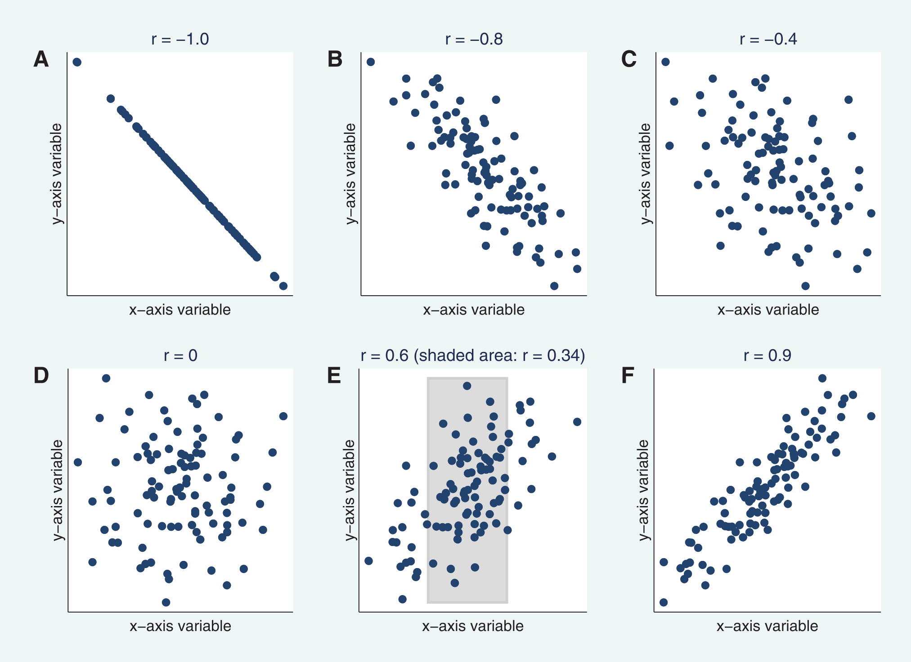
Pearson’s \(r\) is strictly a measure of the linear correlation between two variables, and will therefore misrepresent the degree of correlation if there is a non-linear relationship38, as illustrated in the figure below, also from Schober et al. (2018).
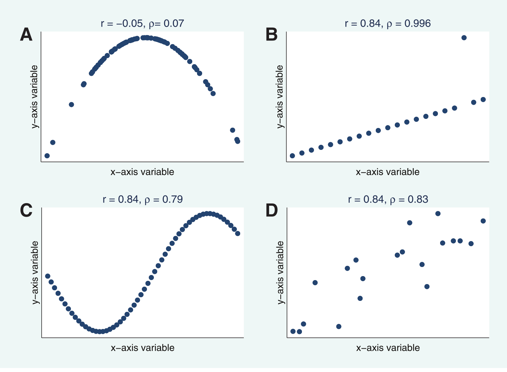
There are multiple ways to define Pearson’s \(r\), for example depending on whether we are assessing the correlation for an entire population of data i.e., the entire group you are looking to analyse39, or assessing the correlation for a sample i.e., a subset of the population.
A common formulation for \(r\) is as follows:
\[r= \frac{\sum_{i=1}^{n}(x_{i}-\bar{x})(y_{i}-\bar{y})}{\sqrt{\sum_{i=1}^{n}(x_{i}-\bar{x})^2}\sqrt{\sum_{i=1}^{n}(y_{i}-\bar{y})^2}}\]
where \(x_i\) and \(y_i\) are the paired observations for the two variables you are studying, \(\bar{x}\) and \(\bar{y}\) are the mean values for \(x\) and \(y\), and \(n\) is the number of observations.
We can summarise this even more simply as follows:
\[r=\frac{\text{Cov}(XY)}{\sigma_{X}\sigma_{Y}}\]
The numerator is the covariance, a measure of the joint variability between the variables \(X\) and \(Y\), while the denominator is the product of the standard deviations of the two variables. The standard deviations \(\sigma_{X}\) and \(\sigma_{Y}\) measure the dispersion of the observations around their respective means. As the covariance value is influenced by the measurement units, dividing by the product of the standard deviations normalises the output to between \(-1\) and \(+1\).
Let’s use an example to illustrate, using ecological data from Getzin et al. (2012), which consists of paired measurements of the median gap shape complexity index (GSCI) \(x\) and species richness (SR) \(y\) for a forest patch (Hainich) in central Germany40.
\[\begin{array}{cc} \text{Median GSCI} & \text{SR}\\ \hline 1.42 & 15.86\\ 1.53 & 20.79\\ 1.34 & 22.82\\ 1.69 & 26.82\\ 1.45 & 33.86\\ 1.55 & 33.95\\ 1.63 & 33.86\\ 1.87 & 29.79\\ 1.87 & 36.84\\ 1.94 & 37.86\\ 1.95 & 33.86\\ 2.17 & 38.79\\ 2.18 & 33.86\\ 2.29 & 31.83\\ 2.52 & 38.87\\ 2.90 & 40.83\\ 2.70 & 44.82\\ 2.95 & 52.89\\ 3.08 & 50.93\\ 3.04 & 48.05 \end{array}\]
Here is a plot of the paired measurements, redrawn from Getzin et al. (2012):
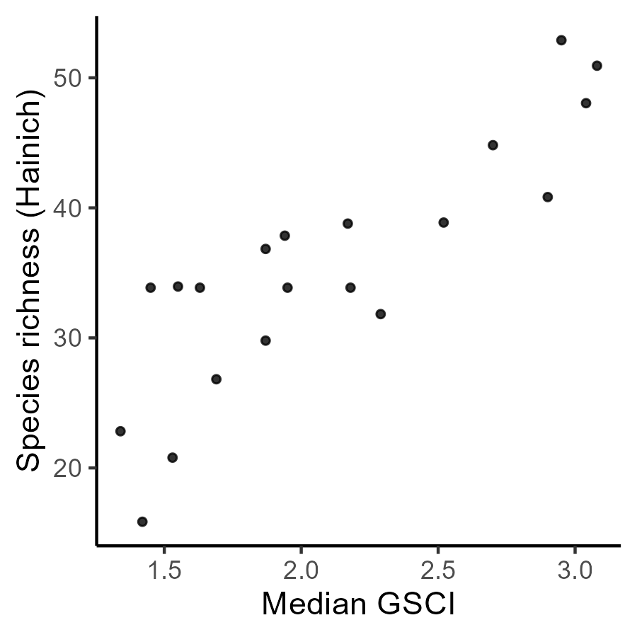
Plugging these paired observations into our full equation above, the numerator calculates the differences between each value and their respective means \(\bar{x}\approx2.10\) and \(\bar{y}\approx35.36\). The summed product of these paired differences is \(\approx90.88\).
For the denominator, we use the squared differences between each value and the mean i.e., \((x_{i}-\bar{x})^2\) and \((y_{i}-\bar{y})^2\). The demoninator is calculated as the product of the square root of the summed squared differences for \(x\) and \(y\), which in this case equals \(\approx105.71\). Therefore:
\[r= \frac{\sum_{i=1}^{n}(x_{i}-\bar{x})(y_{i}-\bar{y})}{\sqrt{\sum_{i=1}^{n}(x_{i}-\bar{x})^2}\sqrt{\sum_{i=1}^{n}(y_{i}-\bar{y})^2}}\approx\frac{90.88}{105.71}\approx0.86\]
What is your interpretation of the correlation coefficient?
Answer
\(r=0.86\) is indicative of strong positive correlation between median gap shape complexity index (GSCI) \(x\) and species richness (SR) \(y\).
Here is the data, if you want to do the calculations yourself41, for example in Excel:
# Data from Getzin et al. (2012)
gsci = [1.42, 1.53, 1.34, 1.69, 1.45, 1.55, 1.63, 1.87, 1.87, 1.94, 1.95, 2.17, 2.18, 2.29, 2.52, 2.90, 2.70, 2.95, 3.08, 3.04]
sr = [15.86, 20.79, 22.82, 26.82, 33.86, 33.95, 33.86, 29.79, 36.84, 37.86, 33.86, 38.79, 33.86, 31.83, 38.87, 40.83, 44.82, 52.89, 50.93, 48.05]We now know how to calculate Pearson’s \(r\) and could begin to measure the association between election results (the topic of the previous practical) and other variables of interest, such as the average income, education levels, or ethnic diversity of the US counties, as described in the data section.
However, there is a problem. Pearson’s \(r\) and other similar correlation metrics, such as Spearman’s rank correlation coefficient \(ρ\), are aspatial measures i.e., they do not take the spatial distribution of the data sets into account. We know from our exploration of spatial autocorrelation that we can often reject the hypothesis of spatial randomness, indicating the presence of clustering or dispersion of the data values.
In turn, there is a need for a measure of bivariate spatial association42, which not only takes into account the numeric similarity of paired observations, but also incorporates the spatial structure of the data and the topological relationships between observations.
The following figure from Lee (2001) (the key academic work for this week) is an excellent illustration of why this is so important.
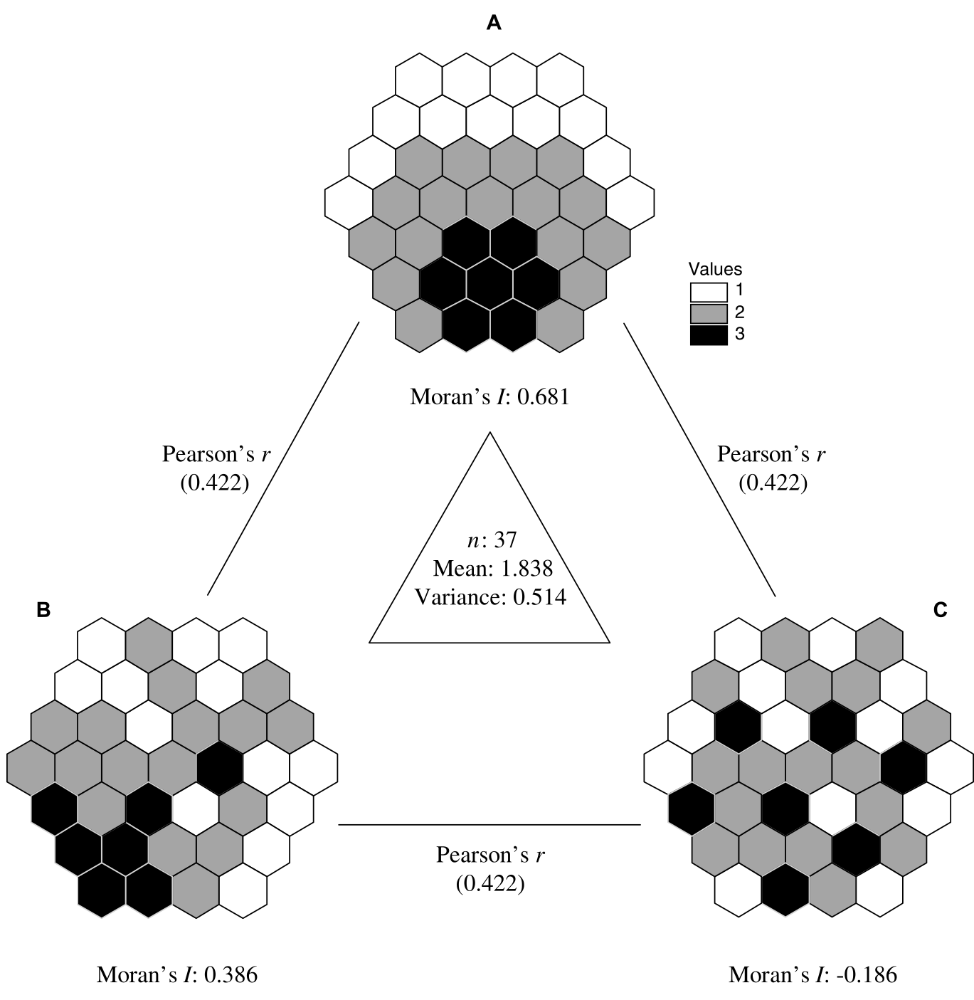
Three spatial realisations of a hypothetical numeric vector
The figure shows three different spatial distributions \(A,B,C\), where the colour of each cell denotes the value \(1,2,3\). As these dataset have the same number of observations \(n=37\) and the same distribution of values (i.e., \(7\times\text{black},17\times\text{grey},13\times\text{white}\)), the mean and variance are also identical.
Based on the visual patterns and Moran’s \(I\), how would you describe the pattern of spatial autocorrelation for each dataset?
The Pearson’s correlation coefficient for each dataset pair (\(A-B\), \(B-C\), \(A-C\)) is also identical, with \(r=0.422\) i.e., a moderate positive correlation. This occurs because Pearson’s \(r\) is calculated using deviations from the mean e.g., \((x_{i}-\bar{x})^2\), and for estimating the covariance, the product of those deviations for each pair of observations i.e., \((x_{i}-\bar{x})(y_{i}-\bar{y})\). It does take spatial structure into account.
To illustrate why that matters, below are the distributions \(B\) and \(C\) from Lee (2001), where I’ve labelled some of the cells \(b_1,b_2,\cdots,b_n\) and \(c_1,c_2,\cdots,c_n\). For calculating Pearson’s \(r\), the calculations use the paired observations i.e., \(b_n + c_n\).
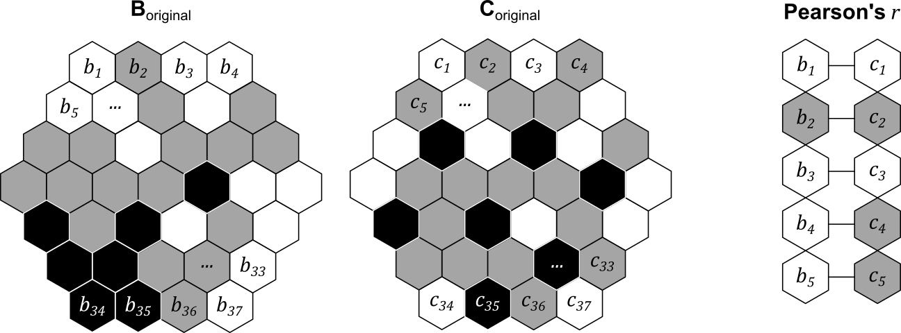
However, we can easily shuffle the objects to generate a new distribution, while retaining the paired structure, as shown below i.e., \(b_1\) is still paired with \(c_1\), and so on.
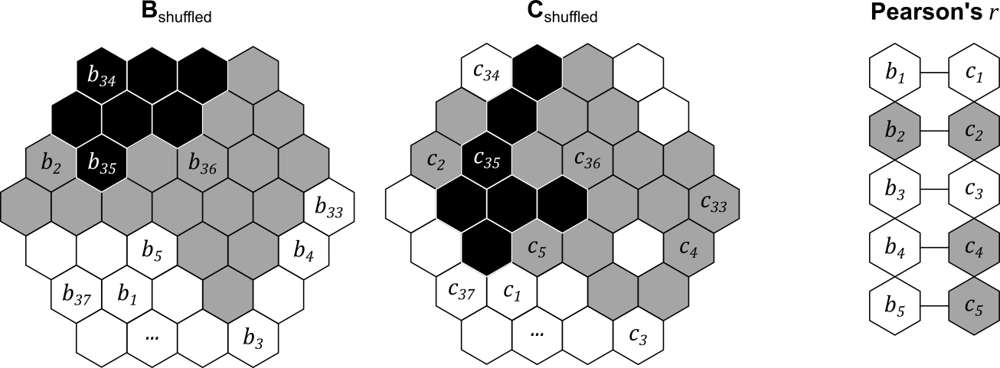
The overall correlation coefficient \(r\) would be unchanged, because the dataset mean, variance and paired structure would be unchanged. However, each dataset now has a very different degree of spatial autocorrelation, and in turn, a very different level of spatial co-patterning. In total, we could generate \(n\) factorial different pairs of spatial patterns (\(!n\)) given the number of observations \(n\). For example, with three paired observations, there are \(!3=3\times2\times1=6\) possible configurations:
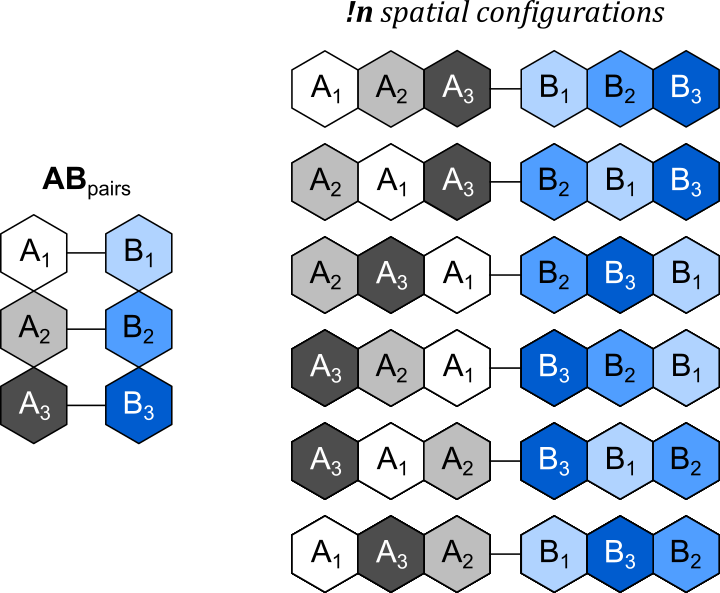
Possible spatial configurations for \(n=3\)
This is the key message of the original figure from Lee (2001). While the global correlation \(r\) is identical for each dataset pair (\(A-B\), \(B-C\), \(A-C\)), \(A-B\) appears (qualitatively) to show a higher level of spatial co-patterning, with higher values of \(A\) and \(B\) found in similar locations on the map. By comparison, \(B-C\) and \(A-C\) do not seem to show clear spatial co-patterning. This possible difference between the datasets is masked by Pearson’s \(r\).
In this practical, we are going to introduce a measure of bivariate spatial association developed by Lee (2001), which “captures the relationship between two variables, taking the topological relationship among observations into account”.
4.2.2 Pre-processing
To begin:
Open ArcGIS, initialise a new project in the
practical-4directory, establish a connection todataand then load the contiguous US county dataus_county_500k_contig_cf(projected CRS, n=3109) that we produced in Practical 3.
As we previously used a dynamic table join to link the geometries to the 2024 election results, the fields of interest (e.g.,gop_perc, dem_perc) are no longer present in the Attribute Table.
Load
2024_US_County_Level_Presidential_Results.csvbut this time use a static table join to link the election results to our county geometries, joining using theNAMELSADandcounty_namefields, and selecting thegop_percanddem_perc“Transfer Fields”.
As discussed above, we want to explore whether the observed patterns in the variable of interest are associated or correlated with other variables. To investigate this:
Load the tables containing the poverty, education, and demographic indicators [
poverty_2023.csv,education_2023.csv,demographics_2024.csv].
While some of these datasets contain “county name” fields, not all do. Instead, we’ll join the fields of interest to the county geometries using the Federal Information Processing Series (FIPS) code, which is present in all the datasets e.g., the FIPS_code attribute.
As discussed in Practical 3, these are currently in different data formats, which you can inspect via the Attribute Table → right click Fields → Data Type. In us_county_500k_contig_cf, GEOID = Text, but in the education_2023 table (for example), FIPS_Code = Long i.e., numeric. As these different data formats would preclude any matches i.e., \(01003_{text}\neq01003_{numeric}\), we’ll need to do some data processing to ensure the formats are consistent. This could be achieved by converting the text GEOID to numeric, or the numeric FIPS_Code to text. To minimise the number of format conversions, we’ll do the former.
Open the Attribute Table for
us_county_500k_contig_cfand use Calculate Field to specify a new fieldGEOID_int, “Field Type” =Long, using the following expression:int(!GEOID!).
With our FIPS code in the correct data format:
Use Join Field to produce static table joins between
us_county_500k_contig_cfand the eduction, poverty and demographic tables, joining based onGEOID_intandFIPS_code.
To simplify our analysis, we are only going to transfer some key fields, including:
MEDHHINC_2023(poverty): Median household income ($)PCTPOVALL_2023(poverty): Percentage of the total population in povertyWA_perc(demographics): Percentage of the total population classed as “white”Less_High_School_Graduate_perc(education): Percentage of adults who are not high school graduatesHigh_School_Graduate_perc(education): Percentage of adults who are high school graduates (or equivalent)College_or_associate_perc(education): Percentage of adults completing some college or associate degreeBachelor_or_higher_perc(education): Percentage of adults with a bachelor’s degree or higher
When complete, all the fields should be present in the Attribute Table:
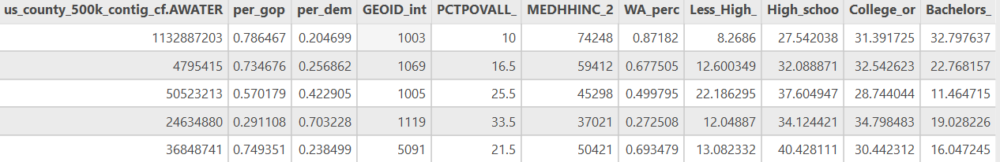
As we are using the shapefile (.shp) format, field names can be a maximum of 10 characters. This explains why our field names have been truncated i.e., Less_High_School_Graduate_perc → Less_High_. For this set of field names, we can still identify which field is which, so for simplicity we will continue with this data format. A more rigorous approach would to be save as a layer in our project geodatabase or use a more modern spatial data format.
To finish the pre-processing:
Remove all the standalone tables from ArcGIS. These are no longer necessary, given our use of static table joins via Join Field.
4.2.3 Exploratory analysis
Before we define and evaluate our measure of bivariate spatial association (Lee, 2001), we should always undertake some initial exploratory analysis.
Modify the layer symbology and inspect the Attribute Table to investigate the eduction, poverty and demographic variables.
What is the average poverty percentage for the US counties?
What is the minimum and maximum county-level median income?
How would you describe the distribution of the demographic variables i.e., WA_perc?
Use Create Chart → Scatter Plot to investigate the relationships between
gop_percand the other county-level variables.
Are there any interesting relationships?43 Does the sign of the relationship (\(-|+\)) match your expectations?
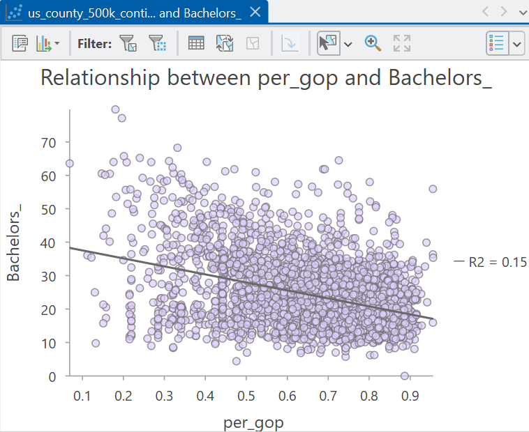
Relationship between the Republican vote share and the percentage of adults with a bachelor’s degree or higher
Finally, it is worth exploring the spatial patterns in our data, for example:
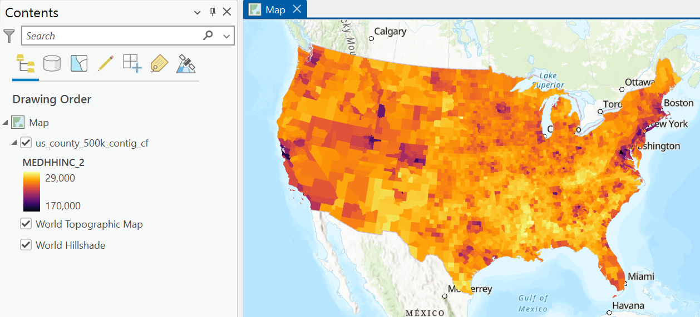
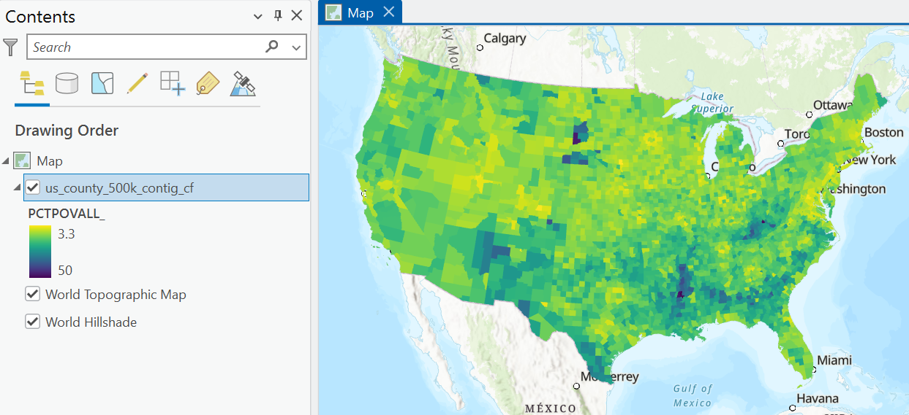
Create your own visualisations for the eduction, poverty and demographic variables.
Can you identify any interesting spatial patterns or clustering? What might explain these?
This qualitative approach is useful, but as we discussed in the previous practical, our ability to identify meaningful spatial patterns is not perfect, with potential for Type I and Type II errors. Instead, we should use a statistical approach to assess for spatial autocorrelation.
We already know that there is global positive spatial autocorrelation of the Republican vote share, as revealed using Moran’s \(I\) (Moran, 1948). We also have information on the distribution of clusters (HH, LL) and outliers (LH, HL), as identified using local Moran’s \(I_i\) (Anselin, 1995a). We also compared these results to those produced by Getis and Ord’s \(G\), \(G_{i}\) and \(G_{i}^{*}\) (Getis and Ord, 1992).
Using tools of your choice, investigate global and local spatial autcorrelation for the eduction, poverty and demographic variables. I would recommend focusing on the median household income, the percentage of the total population classed as “white”, and the percentage of adults with a bachelor’s degree or higher.
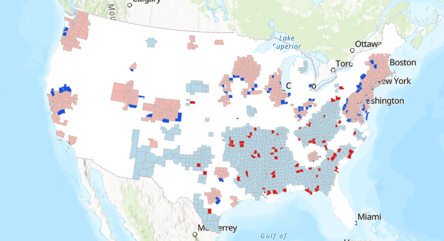
What is your interpretation of spatial autocorrelation for these datasets? Is there evidence of clustering, randomness, or divergence?
Which spatial weights method did you choose and why?
As you will have discovered, we can reject the hypothesis of spatial randomness for many of the variables of interest. As a result, while we can use Pearson’s \(r\) to assess the strength and direction of the correlation between our variables44, this measure is not taking into account the autocorrelation that is present, as we discussed in the introduction. As a result, we should be critical:
Is Pearson’s \(r\) capturing the “true” correlation between our spatial variables?
4.2.4 Understanding bivariate spatial association
Based on this reasoning, we need to use a more appropriate measure, which incorporates the following distinct forms of association, as discussed by Hubert et al. (1985) and Lee (2001):
- point-to-point association i.e., the numerical relationship between two variables measured at the same location (for example, as measured using Pearson’s \(r\)).
- spatial association i.e., the spatial clustering of the data (for example, as measured using Moran’s \(I\))
This measure would enable us to investigate:
Are the two variables numerically related and/or do they exhibit similar geographic patterns?
4.2.4.1 Lee’s \(L\)
One solution to this is Lee’s \(L\) (Lee, 2001), which is defined as:
\[L_{XY}=\frac{n}{\sum_i(\sum_{j}w_{ij})^2}\frac{\sum_{i}[(\sum_{j}w_{ij}(x_{j}-\bar{x}))(\sum_{j}w_{ij}(y_{j}-\bar{y}))]}{\sqrt{\sum_{i}(x_{i}-\bar{x})^2}\sqrt{\sum_{i}(y_{i}-\bar{y})^2}}\] This looks quite complicated (and it took me a while to untangle the mathematics!), but there are lots of components here that you should be familiar with45.
For example, the spatial lag is present \(\sum_{j}w_{ij}(x_{j}-\bar{x})\), which we introduced in the previous practical and which forms a key component of Moran’s \(I\). Remember this is the weighted value of a variable for each locations neighbourhood and here is calculated using the deviation from the mean value i.e., \(x_{j}-\bar{x}\).
The spatial lag is present in the numerator on the right hand side:
\[\sum_{i}[(\sum_{j}w_{ij}(x_{j}-\bar{x}))(\sum_{j}w_{ij}(y_{j}-\bar{y}))]\]
which can be summarised as follows. For each location \(i\):
- compute the spatial lag for the mean-centered variable \(x\) i.e., the weighted neighbourhood value.
- compute the spatial lag for the mean-centered variable \(y\).
- multiply the spatial lags together.
The numerator is therefore the sum of this product for all \(i\) locations.
It may be helpful to understand this visually, so:
Inspect the schematic below, which illustrates the process for a single focal feature (Sante Fe County, New Mexico, GEOID: 35049).

The process is very similar to that introduced in the previous practical. A minor difference is that here we are using standardised (mean-centered) values. The more striking difference is that the process involves two variables, rather than one, in this case the Republican vote share (gop_perc) and the percentage of the total population in poverty (PCTPOVALL_2023). Standardised values for each variable are multiplied by the corresponding spatial weights (in this case, row-standardisation has been used, so \(w=1/7\)46), and then summed to produce the spatial lags. The value for the focal feature is the product of these spatial lags, which here is \(-0.52\). This process would be repeated for all features in the dataset, and the final numerator value is the sum of those values \(\sum_{i}\).
We can interpret the values for the focal feature as follows:
- the spatial lag for the Republican vote share \(x\) is negative at \(-0.25\) i.e., the neighbours of \(i\) have a weighted Republication vote share that is below the global average.
- the spatial lag for the poverty percentage \(y\) is positive at \(2.09\) i.e., the neighbours of \(i\) have a weighted poverty percentage that is above the global average.
When combined:
- the product of the spatial lags is negative47, which is indicative of a negative local spatial association between \(x\) and \(y\) i.e., the neighbourhood is characterised by a relatively low Republican vote share but a relatively high poverty percentage, with respect to the global mean values.
- the focal feature would therefore contribute negatively to the overall test statistic \(L\).
If you’d like to run through the calculations yourself to help your understanding, here are the data:
# Neighbourhood values (Queen's contiguity) for Sante Fe County, New Mexico, GEOID: 35049
gop_perc = [0.39, 0.33, 0.46, 0.38, 0.67, 0.24, 0.41]
poverty_perc = [18.5, 3.8, 11.7, 13.5, 23, 24.7, 20.9]
# Global means
gop_mean = 0.66
poverty_perc_mean = 14.5The denominator for the right hand side of Lee’s \(L\) is as follows:
\[\sqrt{\sum_{i}(x_{i}-\bar{x})^2}\sqrt{\sum_{i}(y_{i}-\bar{y})^2}\]
This should be very familiar, as it is identical to the denominator for Pearson’s \(r\), albeit with slightly different notation. This is capturing the standard deviations of the two variables, measuring the dispersion of the observations around their respective means. This approach standardises the numerator (which measures the similarity of the spatial lag patterns of \(x\) and \(y\) for all locations) by the overall variability of the two variables (see here for a refresher).
The following schematic outlines how that would be applied to the Sante Fe example, where local \(L\) is divided by the product of the standard deviations (\(0.92\)):
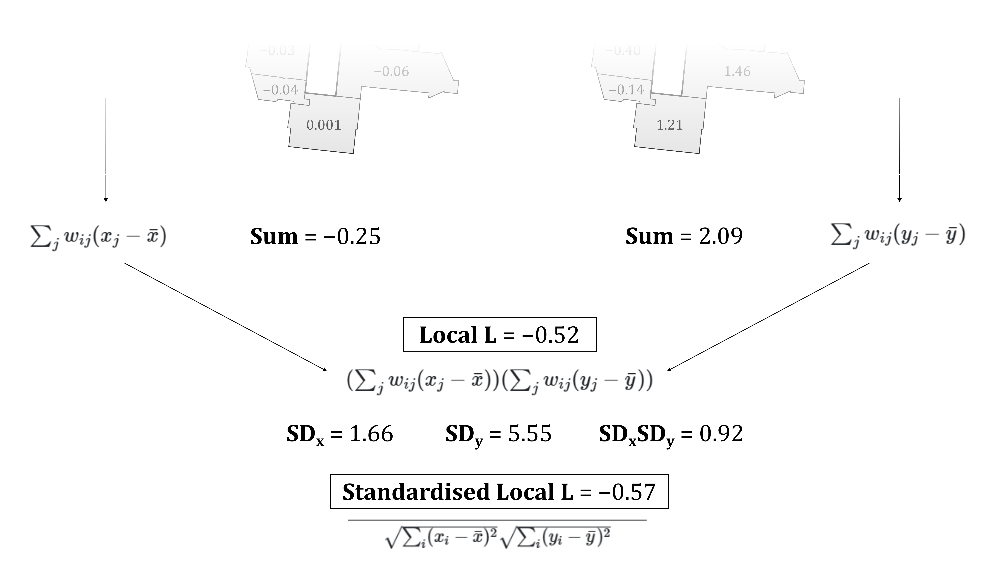
As with Moran’s \(I\), the left hand side of the equation accounts for the number of observations and their spatial weights:
\[\frac{n}{\sum_i(\sum_{j}w_{ij})^2}\]
How is this different to the approach used for Moran’s \(I\)?
Answer
If you compared the two equations carefully, you will have noticed that the denominator for Moran’s \(I\) is \(\sum_{i}\sum_{j}w_{ij}\), whereas for Lee’s \(L\) it is \(\sum_i(\sum_{j}w_{ij})^2\). This difference arises because Lee’s \(L\) is based on the product of two spatial lags, whereas Moran’s \(I\) is based on the cross-product between an observation and the spatial lag of the same variable.
The aim of the denominator in both \(I\) and \(L\) is to remove the effect of different neighbourhood sizes and weight magntiudes. In Moran’s \(I\) this is achieved by scaling based on the total sum of weights in the spatial weights matrix. This is appropriate because the numerator involves a single spatial lag, which represents a single application of the spatial weights matrix. For Lee’s \(L\), two spatial lags are calculated, one for \(x\) and \(y\), representing two applications of the spatial weights matrix. As these two spatial lags are then multiplied, normalisation accounts for the squared influence of the row sums of the spatial weights.
For example, take the following binary spatial weights matrix, with the row sums (number iof neighbours) included:
\[W=\begin{bmatrix}0 & 1 & 1 & 1 \\ 1 & 0 & 1 & 0 \\ 1 & 1 & 0 & 0 \\ 1 & 0 & 0 & 0\end{bmatrix} \rightarrow \begin{matrix}3 \\ 2 \\ 2 \\ 1 \end{matrix} \]
For Moran’s \(I\), normalisation is based on the sum of all the non-zero weights in the spatial weights matrix (\(\sum_{i}\sum_{j}w_{ij}\)) i.e., \(1 + 1 + 1 +\cdots + 1=8\).
For Lee’s \(L\), normalisation is based on the sum of the squared row sums in the spatial weights matrix \((\sum_{j}w_{ij})^2\) i.e., \(3^{2}+2^{2}+2^{2}+1^{2}=18\).
In Moran’s \(I\), the first feature has three neighbours, which would contribute \(3\) to the total sum of weights. In Lee’s \(L\), the same neighbours contribute to the spatial lags for both \(x\) and \(y\). When these spatial lags are multiplied, the contribution of the neighbourhood is also multiplied, so the corresponding weight is proportional to \(3^{2}=9\).
As a final point, this normalisation is not required when row-standardisation is used.
If there’s anything you didn’t understand, now is the time to ask!
4.2.4.2 Interpreting Lee’s \(L\)
To understand the typical outputs of Lee’s \(L\):
Inspect the following illustrative examples, reproduced from Lee (2001). These are the same spatial distributions \(A, B, C\) used in the introduction.
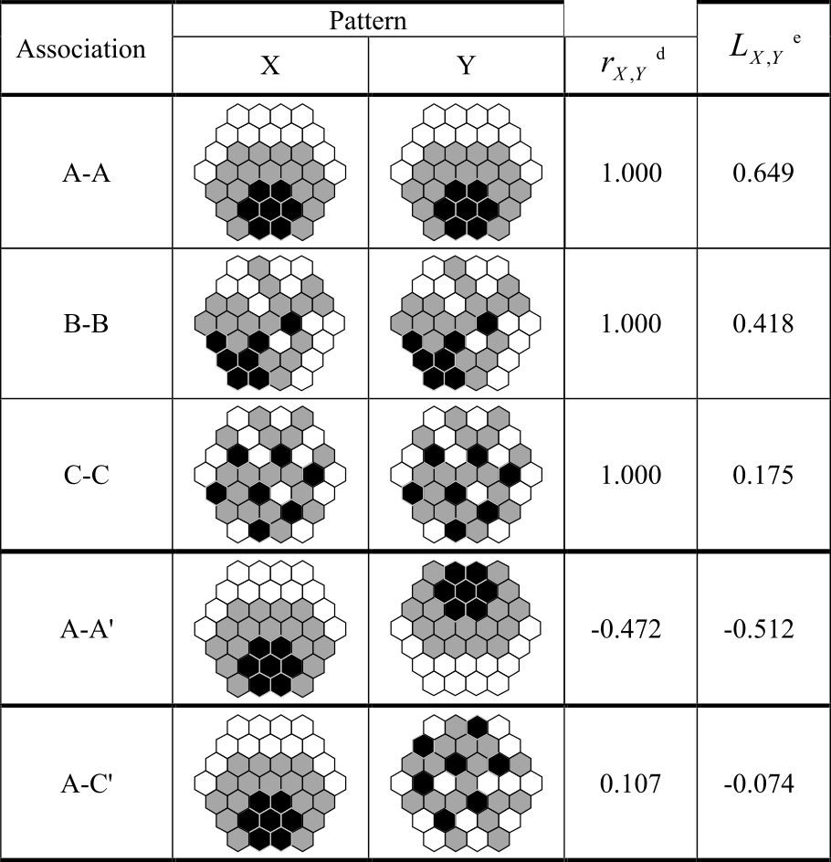
Our first example is a self-comparison of \(A\) vs. \(A\). Unsurprisingly, Pearson’s \(r=1\), indicating a perfect positive linear correlation. However, Lee’s \(L\) is only 0.649.
Can you think why this might be?
Answer
Intuitively, we might expect Lee’s \(L\) to also equal 1. Fundamentally, we are comparing the same dataset against itself… surely this should produce perfect co-patterning?
The answer is no. This is because Lee’s \(L\) is not comparing the values of \(A\) vs. the (identical) values of \(A\), as with Pearson’s \(r\). It is comparing the spatially lagged values of \(A\) (numerator) with the overall variation in the original values of \(A\) (denominator). As we discussed in the previous practical, the former is a smoothed version of the original values, whereby the spatial lag is a weighted average of its neighbours.
In turn, Lee’s \(L\) allows us to evaluate:
How closely do the spatial patterns of the two variables correspond after accounting for their neighbourhood structures?
Investigate the \(B-B\) and \(C-C\) comparisons.
Here you’ll notice that for \(B-B\) and \(C-C\), Pearson’s \(r\) is also \(1\), because the attribute values are identical. However, Lee’s \(L\) is lower, at \(0.418\) and \(0.175\). These examples are an excellent illustration of what Lee’s \(L\) is trying to detect, which is the magnitude of neighbourhood-level variation compared to the magnitude of the original variation.
For the \(A-A\) comparison, there is evidence of relatively strong co-pattering (\(L=0.649\)). Progressively lower neighbourhood similarity for \(B-B\) and \(C-C\) is reflected in lower \(L\) values, particularly for \(C-C\), where negative spatial autocorrelation is observed (Moran’s \(I=-0.186\)). As the standard deviation of the datasets is identical (the denominator in Lee’s \(L\)), any variability in \(L\) must therefore reflect their different spatial structures.
These self-comparisons are useful to understand \(L\), but the comparisons of \(A-A'\) (flipped) and \(A-C\) are more typical of actual data.
What is your interpretation of \(A-A'\) and \(A-C\).
Answer
For \(A-A'\), this is indicative of moderate to strong negative spatial association between the variables (\(L=0.512\)) i.e., locations where \(A\) has relatively high neighbourhood values tend to correspond to locations where \(A'\) has relatively low neighbourhood values, and vice versa.
For \(A-C\), there is both weak attribute similarity (\(r=0.107\)) and very weak spatial co-pattering (\(L=-0.074\)).
4.2.4.3 Local Lee’s \(L\)
Lee’s \(L\), like Moran’s \(I\), is a global statistic, providing information on the degree of point-to-point association and spatial association for a dataset as a whole.
However, we often want to go further:
Which parts of the map show spatial co-patterning?
Luckily we don’t need to do any further calculations, because the global value for \(L\) is calculated based on feature-specific “local” \(L\) values. We’ve already covered how those are calculated in some detail, including in the schematic above. These local \(L\) values indicate whether the focal feature is characterised by positive, negative or negligible local spatial association.
The statistical significance of the global and local \(L\) values can be determined by permutation tests, as with Moran’s \(I\) and \(I_{i}\). For the latter, this allows us to distinguish statistically significant categories (High-High, Low-Low, High-Low, Low-High), much like with local Moran’s \(I_{i}\).
4.2.5 Running bivariate spatial association
That’s enough theory. Let’s play with some data.
Open the Geoprocessing tool Bivariate Spatial Association (Lee’s L), using
us_county_500k_contig_cfas the “Input Features”, withper_gopandPCTPOVALL_2023as the analysis fields48 and use Queen’s contiguity. Save the output features to the project directory with a suitable name e.g.,L_gop_pov_qc
The tool has produced a striking map of local \(L\), but before we explore it, we need to investigate the global results, which are shown here:
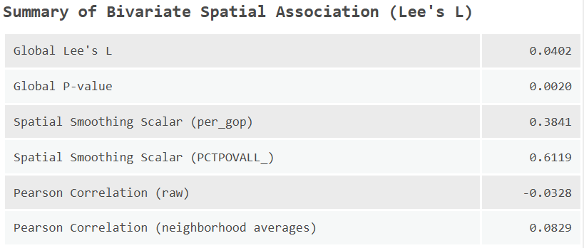
What is your interpretation of the global level results, including \(L\) and it’s associated \(p\) value, and Pearson’s \(r\) (Pearson Correlation - raw).
The ArcGIS implementation also returns the spatial smoothing scalar for both variables. We haven’t defined this yet, as it doesn’t feature directly in the main \(L\) equation, but you’ll notice it’s very similar to \(L\):
\[SSS_X=\frac{n}{\sum_{i}(\sum_{j} w_{ij})^2}\frac{\sum_{i}(\sum_{j}w_{ij}(x_{j}-\bar{x}))^2}{\sum_{i}(x_{i}-\bar{x})^2}\]
Broadly this is measuring the degree of variation in a single spatially smoothed variable, with values closer to \(1\) indicating strong positive spatial autocorrelation, and values closer to \(0\) indicating strong negative spatial autocorrelation.
In our case, while the global \(p\) value is “significant” \(p<0.05\), the magnitude of both \(L\) and \(r\) is very small. As a result, the statistical significance of the result is unlikely to be meaningful. Instead, it likely reflects the fact that both variables show autocorrelation (as revealed by \(SSS_X\)), even though there is little cross correlation between them.
While we should be cautious about the local statistics in light of this, the Attribute Table still contains some useful information, such as local \(L\) and the neighbourhood averages for each variable49.
What is the local \(L\) for our test county (Sante Fe County, GEOID: 35049)? Why does this differ from the calculations above?
Answer
This is because the ArcGIS implementation includes the focal feature in the calculations.
Given the unclear global pattern, let’s investigate some other bivariate associations.
Re-run Bivariate Spatial Association (Lee’s L), comparing against the percentage of the population with a bachelor’s degree of higher (
Bachelors_or_higher_perc). Use the same spatial weights approach for consistency.
Is education level associated with the Republican vote share? Does this match your expectations?
Do \(r\) and \(L\) differ and what does this suggest?
Where are the clusters of positive spatial association (high-high, low-low)? What might explain these?
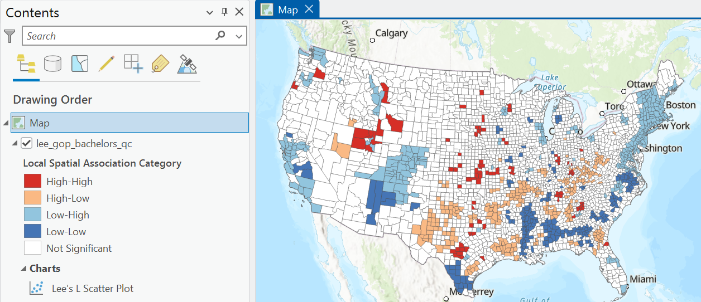
Where are the clusters of negative spatial association (high-low, low-high)?
Bivariate Spatial Association (Lee’s L) also produces a Lee’s \(L\) scatter plot, which shows the neighbourhood weighted averages (spatial lags) for each feature for both variables, as well as those features classed as statistically significant:
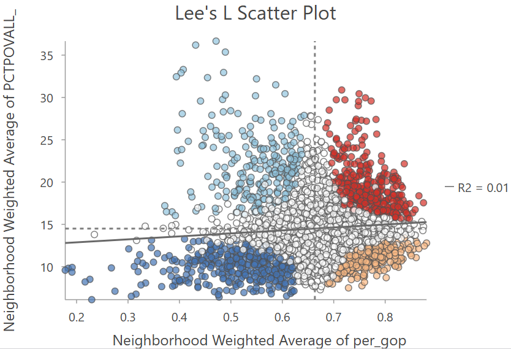
In my view, a more accurate visualisation would be based on the normalised spatial lags i.e., \(\sum_{j}w_{ij}(x_{j}-\bar{x})\), given this is the basis for Lee’s \(L\). However, unnormalised neighbourhood averages are perhaps more easily interpretable, reflecting the typical values observed in the raw data.
Repeat the analysis, looking at the percentage of the population classed as “white” (
WA_perc) and the median household income (MEDHHINC_2023), and any other bivariate comparisons of interest.
Which indicators show positive or negative spatial association with the Republican vote share?
James, some values for your testing. Can you reproduce these?
- White % [
WA_%]:- An example of positive association i.e., as White % increases, GOP vote percent increases.
- Lee’s L = -0.243755, P-value = 0.002, Pearson Correlation = -0.384821
- Bachelor degree % [
Bachelors_or_higher_%]:- An example of negative association i.e., as Bachelor degree % increases, GOP vote percent decreases.
- Lee’s L = 0.30255, P-value = 0.002, Pearson Correlation = 0.539114
- In both cases, Lee’s L < Pearson’s R
- Median income [
MEDHHINC_2023]:- A negative association, but in this case Lee’s L ~ Pearson’s R
- Lee’s L = -0.209754, P-value = 0.002, Pearson Correlation = -0.215725
A further observation - all of the reported P-values are identical (0.002). Needs evaluating.
4.2.6 Now that’s what I call spatial correlation…
In this practical we’ve introduced Lee’s \(L\) which measures the association between two spatial variables, taking into account their spatial structure and the arrangement of values across neighbouring locations. While Pearson’s \(r\) (and similar aspatial metrics) measure point-to-point association i.e., the numerical relationship between two variables measured at the same location, Lee’s \(L\) evaluates whether this relationship is reflected in the spatial patterns of the two variables.
To finish the practical:
Can you describe the key differences between Pearson’s \(r\) and Lee’s \(L\)?
How do we interpret the global and local results?
How might the results change if an alternative spatial weighting approach was used?
Run Bivariate Spatial Association (Lee’s L) using a distance based or \(k\) neighbours weighting to evaluate this.
If you are satisfied with your understanding… congratulations! You have completed the practical and should now have a thorough understanding of the limitations of aspatial measures of correlation (when applied to spatial data), and alternative measures which take spatial structure into account.
4.3 Extra
I’ve provided you with some other county-level datasets in data/us-census, including age-standardised mortality, unemployment, and internet adoption.
Can you find any interesting associations?
Is there any pattern to the spatial and non-spatial measures of association?
What are some limitations of our approach?
Answers
There are a few obvious limitations to our approach:
- As ever, the results are sensitive to our designation of the spatial weights matrix.
- We’re also using the same spatial weights matrix for both variables. There might be circumstances where we’d want to use different neighbourhood definitions, see Illanas et al. (2025a).
- We’re also only dealing with bivariate associations, rather than a combination of factors, which might ultimately be needed to explain spatial variability in Republican vote share. We’ll explore this in Practical 7 and Practical 8.
- We can also engage critically with the ArcGIS implementation of \(L\), given it is doesn’t allow us to investigate the normalised (mean-centered) spatial lags for each variable, and seems to enforce the inclusion of the focal feature in the calculations.
For those of you interested in exploring further, there are lots of other county-level datasets available, for example on diabetes prevalence, drug overdoses, or even crop yields but some data wrangling would be required to bring these into ArcGIS.
4.4 Resources
- Lee, S.I. (2001). Developing a bivariate spatial association measure: an integration of Pearson’s r and Moran’s I. Journal of geographical systems, 3(4), pp.369-385.
- Lee, S.I. (2017). Correlation and Spatial Autocorrelation. In: Shekhar, S., Xiong, H., Zhou, X. (eds) Encyclopedia of GIS. Springer, Cham.
- Illanas, S., Gómez-Rubio, V., Vicente, J. and Acevedo, P. (2025). Assessment of bivariate relationships between spatial patterns: Revisiting the global and local L bivariate indices for wildlife management and conservation[MT1.1]. Ecological Indicators, 175, p.113551.
- Wolf, L.J. (2024). Confounded Local Inference: Extending Local Moran Statistics to Handle Confounding. Annals of the American Association of Geographers, 114(6), 1216–1231.